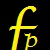

Equation de drake
Combien y-a-t-il de civilisations intelligentes dans la galaxie ?
Voici la question à laquelle Francis Drake a tenté de répondre dans les années 60
en proposant une équation permettant permet d'estimer le nombre de civilisation dans notre galaxie.
 |
 | |||||||||||||
|---|---|---|---|---|---|---|---|---|---|---|---|---|---|---|
Nombre probable de civilisations dans notre galaxie |
Le taux de formation de nouvelles étoiles dans notre galaxie |
Fraction de ces étoiles possédant des planètes |
Nombre moyen de planètes par étoile potentiellement propices à la vie |
Fraction de ces planètes sur lesquelles la vie apparaît effectivement |
Fraction de ces planètes sur lesquelles apparait une vie intelligente |
Fraction de ces planètes capables et désireuses de communiquer |
Durée de vie moyenne d'une civilisation |
|||||||
R* est le taux de formation de nouvelles étoiles dans notre galaxie. |
FP est la fraction de ces étoiles possédant des planètes. |
Ne est le nombre moyen de planètes par étoile potentiellement propices à la vie. |
FL est la fraction de ces planètes sur lesquelles la vie apparaît effectivement. |
FI est la fraction de ces planètes sur lesquelles apparait une vie intelligente. |
Ne est la fraction de ces planètes capables et désireuses de communiquer. |
Ne est la durée de vie moyenne d'une civilisation. |